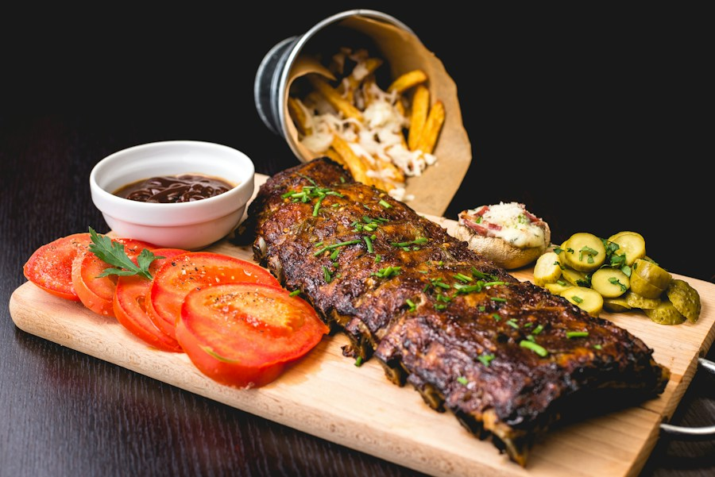

Chef Elena’s favorite
Garden Pesto Pasta
★★★★★ (42 reviews)
$18.00
Twirl into a bowl of fresh, handmade pasta tossed with vibrant basil pesto and finished with parmesan and toasted pine nuts.
Ingredients: Durum wheat pasta, basil, extra virgin olive oil, parmesan, pine nuts, garlic, lemon.
A little more about this dish
Our pesto is prepared daily with hand-picked basil, cold-pressed olive oil, and aged parmesan. The pasta is made in-house each morning for a tender bite that holds every bit of that bright, herbaceous sauce.
Nutrition (per serving)
| Calories | 540 kcal | Protein | 19 g |
|---|---|---|---|
| Carbohydrates | 64 g | Fat | 23 g |
Something else to love
Related dishes

Harvest Bowl
$16